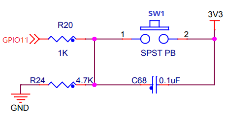

1.2. GPIO 中断 - 按键检测¶
本 demo 基于 GPIO 外设外部中断模式编写。
1.2.1. 硬件连接¶
本 demo 基于BL706_IOT开发板，自行添加按键电路，连接方式如下
GPIO function GPIO pin
----------------------------------
SW1 <--> GPIO11

1.2.2. 软件实现¶
- 软件代码见
examples/gpio/gpio_int
1 2 3 4 5 6 7 8 | static void gpio11_int_callback(uint32_t pin)
{
MSG("gpio rising trigger !\r\n");
}
gpio_set_mode(GPIO_PIN_11,GPIO_SYNC_RISING_TRIGER_INT_MODE);
gpio_attach_irq(GPIO_PIN_11,gpio11_int_callback);
gpio_irq_enable(GPIO_PIN_11,ENABLE);
|
- 使用上述代码将
GPIO11配置为GPIO上升沿中断触发模式，并注册中断回调函数。
1.2.3. 编译和烧录¶
CDK 编译
打开项目中提供的工程文件：gpio_int.cdkproj
参照 Windows 下使用 CDK (类 MDK Keil)开发指南 的步骤编译下载即可
命令行编译
1 2 | $ cd <sdk_path>/bl_mcu_sdk
$ make BOARD=bl706_iot APP=gpio_int
|
烧录
1.2.4. 实验现象¶
当按键按下时，串口会打印 "gpio rising trigger !"